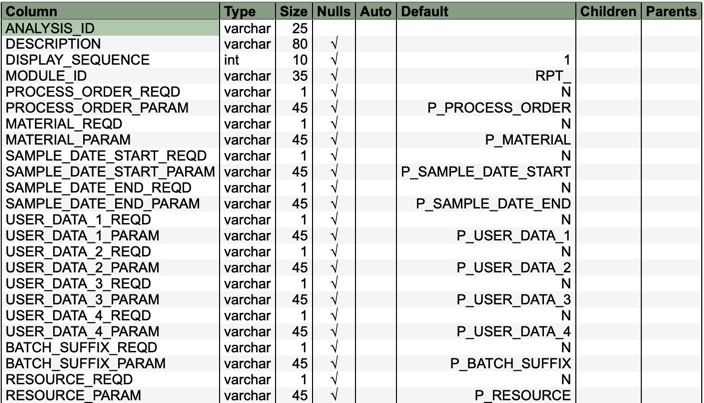

Package com.commander4j.db
Class JDBQMAnalysis
java.lang.Object
com.commander4j.db.JDBQMAnalysis
The JDBQMAnalysis inserts rows into the APP_QM_ANALYSIS table.
Each row in this table is used by the QM Analysis screen to allow the user to generate reports on Samples/Tests and Results.

-
Field Summary
Fields -
Constructor Summary
Constructors -
Method Summary
Modifier and TypeMethodDescriptionvoidclear()booleanbooleandelete()booleanbooleangetAnalysisProperties(String analysisid) intgetQMAnalysisResultSet(String analysisID) booleanbooleanbooleanbooleanbooleanbooleanbooleanbooleanbooleanbooleanbooleanbooleanbooleanisValidAnalysis(String analysisid) voidsetAnalysisID(String analysisid) voidvoidsetBatchSuffixReqd(boolean yesno) voidsetBatchSuffixReqd(String ud3) voidsetDescription(String po) voidsetDisplaySequence(int ud4) voidsetMaterialParam(String ud3) voidsetMaterialReqd(boolean yesno) voidsetMaterialReqd(String inspectid) voidsetModuleID(String value) voidvoidsetProcessOrderReqd(boolean yesno) voidvoidsetResourceParam(String ud2) voidsetResourceReqd(boolean yesno) voidsetResourceReqd(String ud1) voidsetSampleDateEndParam(String dbSampleDateEndParam) voidsetSampleDateEndReqd(boolean yesno) voidsetSampleDateEndReqd(String dbSampleDateEndReqd) voidsetSampleDateStartParam(String dbSampleDateStartParam) voidsetSampleDateStartReqd(boolean yesno) voidsetSampleDateStartReqd(String dbSampleDateStartReqd) voidsetUserData1Param(String dbUserData1Param) voidsetUserData1Reqd(boolean yesno) voidsetUserData1Reqd(String dbUserData1Reqd) voidsetUserData2Param(String dbUserData2Param) voidsetUserData2Reqd(boolean yesno) voidsetUserData2Reqd(String dbUserData2Reqd) voidsetUserData3Param(String dbUserData3Param) voidsetUserData3Reqd(boolean yesno) voidsetUserData3Reqd(String dbUserData3Reqd) voidsetUserData4Param(String dbUserData4Param) voidsetUserData4Reqd(boolean yesno) voidsetUserData4Reqd(String dbUserData4Reqd) toString()booleanupdate()
-
Field Details
-
field_data_1
public static int field_data_1 -
field_data_2
public static int field_data_2
-
-
Constructor Details
-
JDBQMAnalysis
-
-
Method Details
-
clear
public void clear() -
create
-
delete
public boolean delete() -
getAnalysisData
-
getAnalysisID
-
getAnalysisProperties
public boolean getAnalysisProperties() -
getAnalysisProperties
-
getBatchSuffixParam
-
getBatchSuffixReqd
-
getDescription
-
getDisplaySequence
public int getDisplaySequence() -
getErrorMessage
-
getMaterialParam
-
getMaterialReqd
-
getModuleID
-
getProcessOrderParam
-
getProcessOrderReqd
-
getQMAnalysisResultSet
-
getResourceParam
-
getResourceReqd
-
getSampleDateEndParam
-
getSampleDateEndReqd
-
getSampleDateStartParam
-
getSampleDateStartReqd
-
getUserData1Param
-
getUserData1Reqd
-
getUserData2Param
-
getUserData2Reqd
-
getUserData3Param
-
getUserData3Reqd
-
getUserData4Param
-
getUserData4Reqd
-
isAscending
public boolean isAscending() -
isBatchSuffixReqd
public boolean isBatchSuffixReqd() -
isMaterialReqd
public boolean isMaterialReqd() -
isProcessOrderReqd
public boolean isProcessOrderReqd() -
isResourceReqd
public boolean isResourceReqd() -
isSampleDateEndReqd
public boolean isSampleDateEndReqd() -
isSampleDateStartReqd
public boolean isSampleDateStartReqd() -
isUserData1Reqd
public boolean isUserData1Reqd() -
isUserData2Reqd
public boolean isUserData2Reqd() -
isUserData3Reqd
public boolean isUserData3Reqd() -
isUserData4Reqd
public boolean isUserData4Reqd() -
isValidAnalysis
public boolean isValidAnalysis() -
isValidAnalysis
-
setAnalysisID
-
setBatchSuffixParam
-
setBatchSuffixReqd
public void setBatchSuffixReqd(boolean yesno) -
setBatchSuffixReqd
-
setDescription
-
setDisplaySequence
public void setDisplaySequence(int ud4) -
setMaterialParam
-
setMaterialReqd
public void setMaterialReqd(boolean yesno) -
setMaterialReqd
-
setModuleID
-
setProcessOrderParam
-
setProcessOrderReqd
public void setProcessOrderReqd(boolean yesno) -
setProcessOrderReqd
-
setResourceParam
-
setResourceReqd
public void setResourceReqd(boolean yesno) -
setResourceReqd
-
setSampleDateEndParam
-
setSampleDateEndReqd
public void setSampleDateEndReqd(boolean yesno) -
setSampleDateEndReqd
-
setSampleDateStartParam
-
setSampleDateStartReqd
public void setSampleDateStartReqd(boolean yesno) -
setSampleDateStartReqd
-
setUserData1Param
-
setUserData1Reqd
public void setUserData1Reqd(boolean yesno) -
setUserData1Reqd
-
setUserData2Param
-
setUserData2Reqd
public void setUserData2Reqd(boolean yesno) -
setUserData2Reqd
-
setUserData3Param
-
setUserData3Reqd
public void setUserData3Reqd(boolean yesno) -
setUserData3Reqd
-
setUserData4Param
-
setUserData4Reqd
public void setUserData4Reqd(boolean yesno) -
setUserData4Reqd
-
toString
-
update
public boolean update()
-